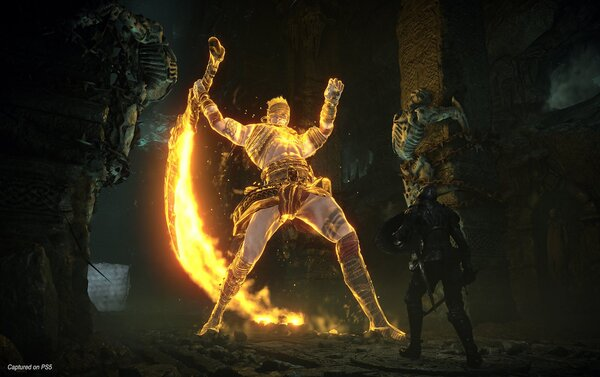

Demon's Souls Remake
A Demon’s Souls története egy fantasy világba kalauzol el minket, ahol az emberiségnek egyszer már majdnem sikerült kihalnia, méghozzá az itt Lélekművészetnek nevezett mágia miatt. Ezen rejtett tanok ugyanis sosem látott hatalmat és jólétet biztosítanak bárkinek, akad azonban egy nagyobb hátrányuk is, avagy, ha túl sokat használják őket, hajlamosak felébreszteni mindenféle ocsmányságot. A Demon’s Souls múltjában pedig pontosan ez történt: a túlzásba vitt Lélekművészet miatt magához tért az egyik leghatalmasabb és leggonoszabb démon, aki az idők hajnala óta várta, hogy egyszer a halandókra vethesse magát. Az egyszerűen csak Ősöregként emlegetett rémség szörnyű pusztítást végzett a világban, és sokáig úgy nézett ki, nem is lesz senki, aki meg tudja állítani. Egy utolsó elkeseredett kísérlet azonban mégis sikerrel járt: az emberiség maradékának legnagyobb hősei összefogtak, és mikor már biztosnak látszott a vereség, Lélekművészetüket felhasználva újra álomba ringatták a démont, testét pedig a Nexus néven emlegetett építmény alatt rejtették. A túlélők ezután természetesen betiltottak mindenfajta mágiát, hogy a jövőben elkerüljék az ilyesfajta helyzeteket, azonban talán mondanunk sem kell, hogy idővel csak felbukkant valaki, aki túlságosan lazán értelmezte ezt a tiltást.
<<<<<<< HEAD

=======
>>>>>>> e0f595efc1015dc4abe37bacc30c9d59c150571d
A Demon’s Souls története egy fantasy világba kalauzol el minket, ahol az emberiségnek egyszer már majdnem sikerült kihalnia, méghozzá az itt Lélekművészetnek nevezett mágia miatt. Ezen rejtett tanok ugyanis sosem látott hatalmat és jólétet biztosítanak bárkinek, akad azonban egy nagyobb hátrányuk is, avagy, ha túl sokat használják őket, hajlamosak felébreszteni mindenféle ocsmányságot. A Demon’s Souls múltjában pedig pontosan ez történt: a túlzásba vitt Lélekművészet miatt magához tért az egyik leghatalmasabb és leggonoszabb démon, aki az idők hajnala óta várta, hogy egyszer a halandókra vethesse magát.